SentinelSCADA › Server Setup Guide › Part 3
Start SentinelSCADA from the desktop shortcut the installer made. The Launcher lives in the notification area at the right of the taskbar, so look for its shield icon, or click the small arrow to show hidden icons. The server is already running once the icon appears, so there is nothing more to start.
Right-click the icon to open its menu. The items you will use most are:
The rest of the menu (the Alarm Dispatcher, browsing projects, importing and exporting secure templates, and the server’s Help) is covered in the built-in help.
Choose Server Status… for a quick health check. It shows whether the server is online, the current project and its security mode, how much memory the server is using and how long it has been running.
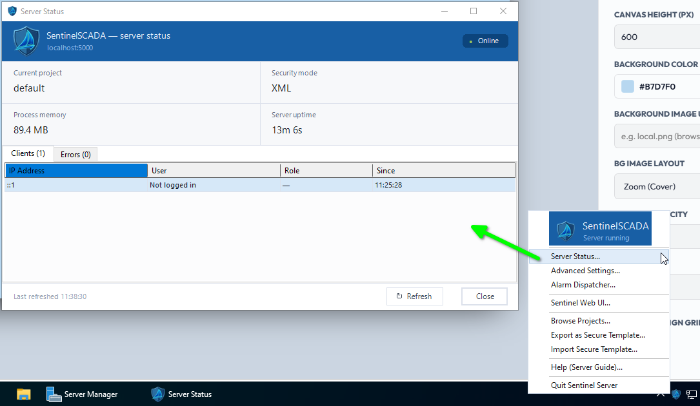
The Clients tab lists every browser connected to the server, with its address, who is signed in, their role and when it connected. The address ::1 is this computer itself. The Errors tab lists any errors the server has logged. Zero is what you want to see.
The bind address decides which network connections the server accepts. Open Advanced Settings… from the tray menu and look at the Networking tab.
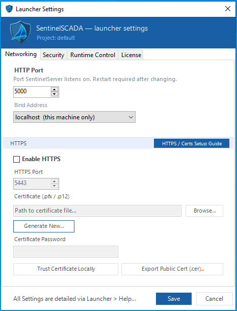
localhost by default.0.0.0.0) is what lets other computers connect. You need it for remote clients, and we set it in Part 4.Leave it on localhost for now. Securing the server while only this machine can reach it means nobody else can connect before you have changed the default passwords.
The HTTPS section on the same tab is covered in Part 5. Press Cancel to close the window without changing anything.
Choose Sentinel Web UI… from the tray menu. The web client opens in your browser at localhost:5000, showing the starter project, named default, in Design Mode.
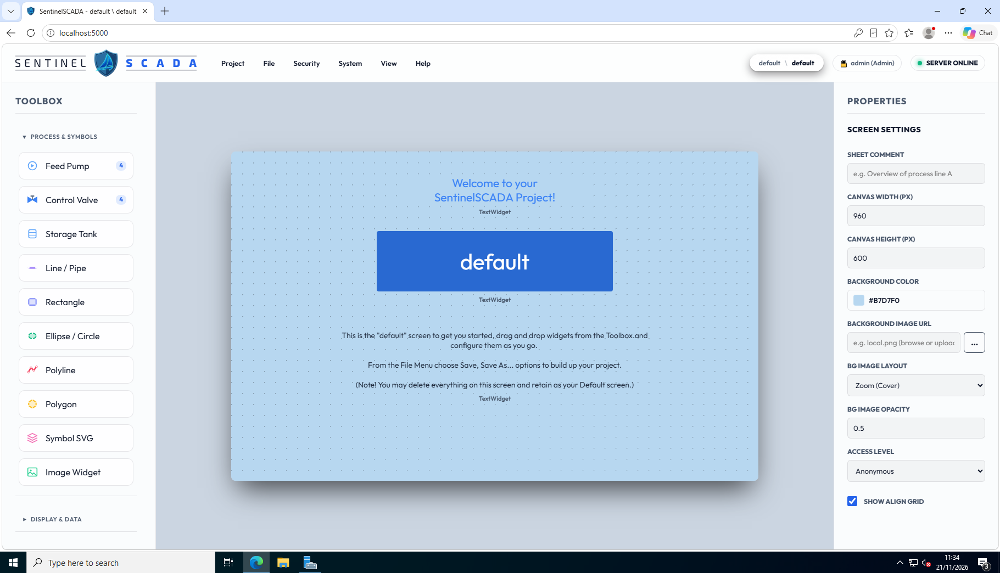
The Toolbox is on the left, the starter screen in the middle and the Properties panel on the right. The menus run along the top: Project, File, Security, System, View and Help. At the top right are the project and screen names, who is signed in, and the server’s status.
The server always starts in Design Mode, every time it starts, so this is where you will always begin.
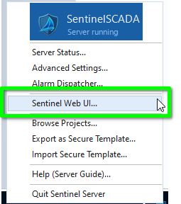
SentinelSCADA keeps its user accounts in a simple file on this computer. This is XML mode, and it is what a new installation uses. (Part 6 covers the next step up.)
A new installation has authentication switched off: anyone who can reach the server can use every feature without signing in. That suits a first look, but not a working system. We will switch it on now.
Open the Security menu and choose Log In…. Every new installation has an administrator account with the username admin and the password admin.
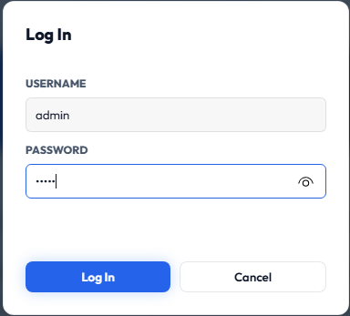
The top right of the page now shows who is signed in.
admin, role Admin.Choose Security > Security Settings…, then the Authentication & Timeout tab. The Require login (Authentication) box is unticked.
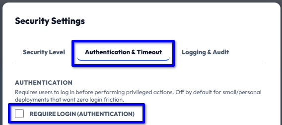
Tick the box and press Save Security Settings.
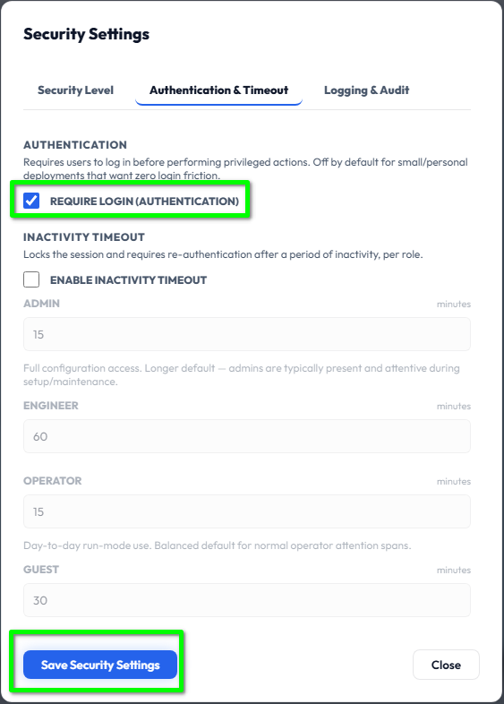
The inactivity timeout below it is a separate, optional setting that signs people out after a period without activity. It stays unticked unless you choose it, and it needs login to be required.
You do not need to sign out first. Your session carries on, and from now on everyone else has to sign in.
Choose Security > User Management…. Four accounts have been created for you, and each one’s password is the same as its username.
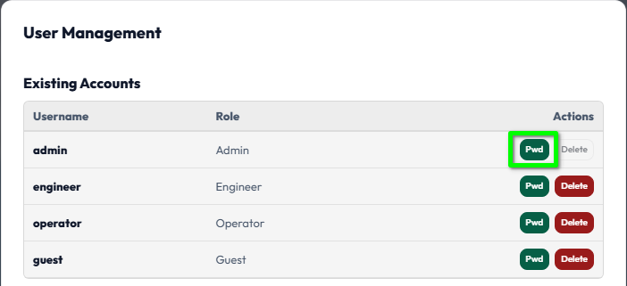
The roles, from most to least privileged, are Admin, Engineer, Operator and Guest. Admin manages users and security settings, and Engineer can edit the project. The built-in Help describes what each role can do. Anyone who has not signed in is an anonymous visitor, who can see a live view of the screens that are set to allow it. That is by design.
Press Pwd on the admin row, type a new password and press Update.
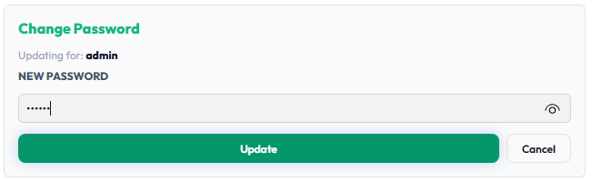
admin.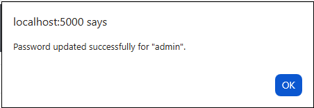
Do the same for engineer, operator and guest. If you will not use an account, press Delete to remove it. The admin account cannot be deleted, which is why its Delete button is greyed out.
Choose Security > Log Out. The page now shows Not logged in and a banner saying the project requires authentication. Press Log In… in the banner and sign in as admin with your new password.
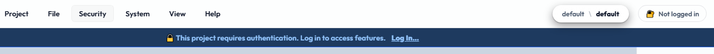
So far you have been in Design Mode, where you build and edit the project. Open the View menu. It offers three modes, and the current one is shown in colour.
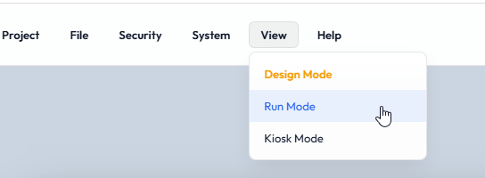
Choose Run Mode.
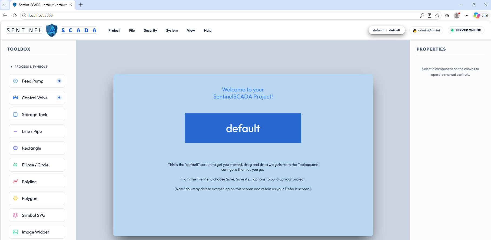
admin.The server returns to Design Mode every time it restarts, so you will have to choose Run Mode again after a restart. Part 4 explains why that matters for remote clients.
You now have a working server in XML mode with login required, the default passwords changed, and the project in Run Mode.
If you are using a virtual machine, shut down the guest and take a snapshot called XML mode working, so you can come back to this point.
Next, in Part 4, you connect from another computer and make the server start by itself.